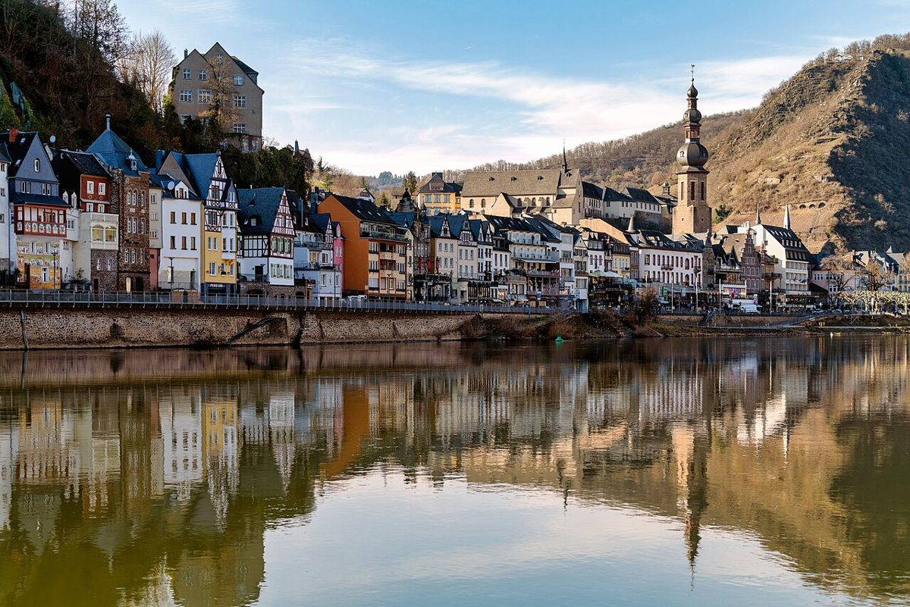

Descubriendo la Magia de Cochem en el Valle del Mosela

Cochem, un encantador pueblo ubicado en el valle del Mosela en Alemania, es un destino que combina historia, naturaleza y tradición vinícola. Este lugar, rodeado de colinas cubiertas de viñedos y el río Mosela serpenteando a su paso, ofrece una experiencia única para cualquier viajero. En este artículo, te llevamos a descubrir los aspectos más destacados de Cochem, junto con consejos prácticos para planificar tu visita.
Anreise nach Cochem
Cochem es fácilmente accesible desde diferentes partes de Alemania y Europa. Si viajas en coche, las carreteras que bordean el río Mosela ofrecen un paisaje espectacular. Si prefieres el transporte público, Cochem cuenta con una estación de tren bien conectada con ciudades como Fráncfort y Colonia. También es posible llegar en barco, disfrutando de un crucero por el río Mosela, una experiencia relajante y pintoresca.
Mejor época para visitar
La mejor época para visitar Cochem es entre mayo y septiembre, cuando el clima es más cálido y los viñedos están en pleno esplendor. Durante estos meses, también puedes disfrutar de festivales locales y eventos relacionados con el vino. Sin embargo, si prefieres evitar las multitudes y disfrutar de un ambiente más tranquilo, la primavera y el otoño también son buenas opciones.
Los 5 imperdibles de Cochem
- Castillo de Cochem: Este imponente castillo medieval, que domina la ciudad desde lo alto de una colina, es una visita obligada. Explora sus torres, salones y jardines mientras aprendes sobre su fascinante historia.
- Paseo en barco por el Mosela: Un crucero por el río Mosela te permitirá disfrutar de las vistas panorámicas de los viñedos y los pueblos pintorescos que bordean sus orillas.
- Casco antiguo: El centro histórico de Cochem, con sus casas de entramado de madera y calles empedradas, es perfecto para pasear y descubrir tiendas locales y cafés acogedores.
- Sendero de los viñedos: Para los amantes del senderismo, el camino que recorre los viñedos ofrece vistas espectaculares y la oportunidad de probar algunos de los mejores vinos de la región.
- Mercado de los viernes: Si visitas Cochem un viernes, no te pierdas su mercado semanal, donde puedes encontrar productos locales, artesanías y delicias culinarias.
Gastronomía típica
La gastronomía de Cochem está fuertemente influenciada por los productos locales. No dejes de probar platos como el "Rieslingsuppe" (sopa de vino Riesling), el "Zwiebelkuchen" (tarta de cebolla) y el "Moselfisch" (pescado del río Mosela). Además, la región es famosa por sus vinos, especialmente el Riesling, que puedes degustar en las muchas bodegas y tabernas locales.
Conclusión
Cochem es un destino que cautiva con su belleza natural, su rica historia y su cultura vinícola. Ya sea que busques relajarte disfrutando de un crucero por el río, explorar un castillo medieval o deleitarte con la gastronomía local, Cochem tiene algo para todos. ¡Planifica tu visita y descubre la magia de este rincón del valle del Mosela!
Haiktec
- 7 Pasos Clave para un Huerto Autosuficiente en Casa
- Planificador de Viajes a Berlín y Potsdam: Presupuesto, Itinerario y Checklist para Hombres
- Descubre Dresden y Sajonia en 7 pasos: Guía práctica para viajeros independientes
Text mit KI erstellt und automatisch geprueft.